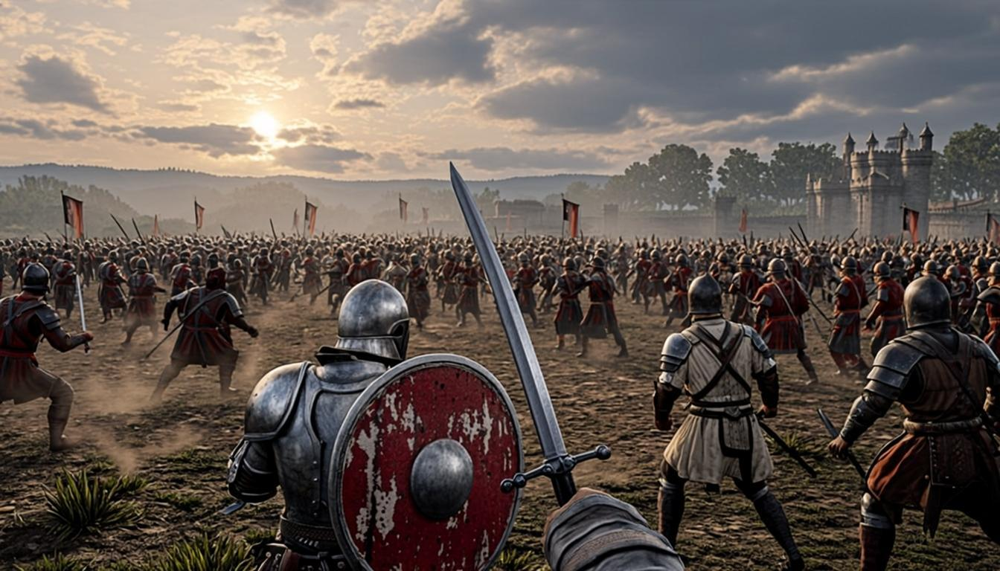
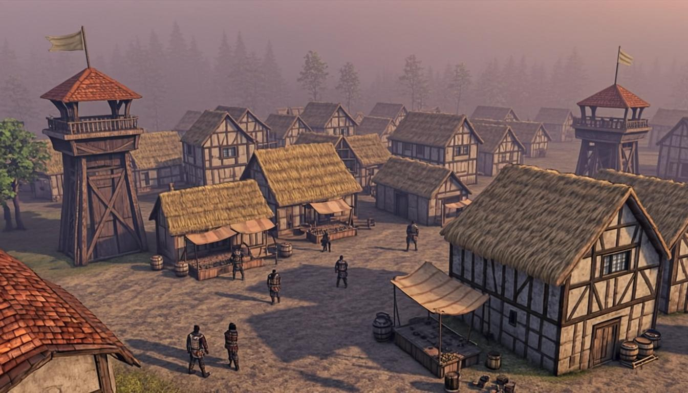
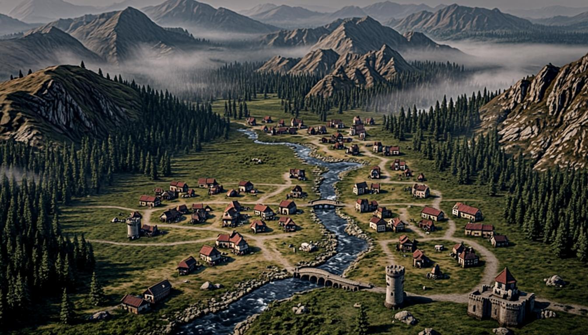

Esto es una muestra visual, no una versión jugable: tres escenas hechas
para que veas la dirección antes de construir nada de verdad. Todo sigue lo ya decidido:
luz oblicua de tarde, niebla al fondo, paleta ceniza/óxido/sebo con oro y sangre como
acentos escasos, y el HUD en tono apagado (#12141c + oro #c8a24a). Mueve el ratón sobre
las escenas y usa los controles: están vivas.
Los 6 sitios de la demo en La Marca del Sur, unidos por el camino real. Arrastra el control de hora: la luz cambia de amanecer → tarde → noche (al caer la noche se encienden los sitios con fuego ámbar). Mueve el ratón encima: las capas se separan en paralaje.
De detrás de la escena: el mundo real será el mismo grafo de sectores
de BoC (herencia directa, dossier 04_MAPA_MUNDIAL) renderizado en WebGL con luz de
tarde, niebla a 60 m y nombres de sitio al pasar. La demo entera vive en esta zona.
Vista del héroe: tu banda (marrón/crema) contra la enemiga (óxido/hierro). Pulsa Recibir golpe y Bloquear para ver las reglas ya decididas en acción: la fórmula de daño de BoC se conserva, pero el bloqueo ya no anula — mitiga 60 % y cuesta 10 de aliento.
Las reglas que estás probando (decididas en Fase B):
daño = atk_ef − 2×def, suelo 25 %, crítico ×1,0–1,5, varianza ±10 % —
herencia literal de BoC (13_CODIGO_NATIVO). Bloqueo: tirada
(bloqueo − antibloqueo)/100; si sale, el golpe entra al 40 % y pagas
10 de aliento; sin aliento, la guardia se rompe y el golpe entra completo.
El aliento regenera 4/s en combate (canon: 100).
Cada sitio tiene vista propia con gente andando, humo, estandartes y las torres de la decisión de Fase B: en la demo se construyen torres puras (hasta 3/2 por sitio); la obra grande estilo AoE-lite llega después de la demo.
De detrás de la escena: herencia de BoC — prosperidad y defensa por
sitio, inversión en pilares, torres en huecos (05_POBLADOS_Y_CONSTRUCCION) —
más lo nuevo de Valcoria: cada sitio con su deuda viva (el chip de la derecha), PNJ que
te recuerdan y liquidación explicada de cada moneda. Post-demo: el hueco libre se convierte en
obra AoE-lite (granja/mercado/muralla).
Tres lienzos generados como referencia demeta: esto es el tono que las escenas anteriores apuntan a conseguir con low-poly + luz, niebla y paleta (fotografía de película medieval, referencia «El Señor de los Anillos»).



| Escena | Lo que pruebas | De dónde sale |
|---|---|---|
| Mapa | Sectores + grafo de sitios, paralaje, día/noche, 6 sitios de la demo | BoC (5×5 TMX + 209 nodos) mejorado · 04_MAPA_MUNDIAL |
| Batalla | Fórmula de daño de BoC intacta + bloqueo que mitiga 60 % y cuesta 10 de aliento; pausa táctica | Fila 11 de la tabla de Fase B (decisión 2026-10-26) · 13_CODIGO_NATIVO |
| Sitio | Torres puras en la demo (2/3 construidas); prosperidad/defensa; deuda viva del sitio | Fila 4 de la tabla de Fase B: demo torres, post-demo AoE-lite |
| Todas | Paleta ceniza/óxido/sebo, luz de tarde, niebla 60 m, HUD apagado con oro escaso | docs/arte/00_ESTILO.md (aprobado por el dueño) |